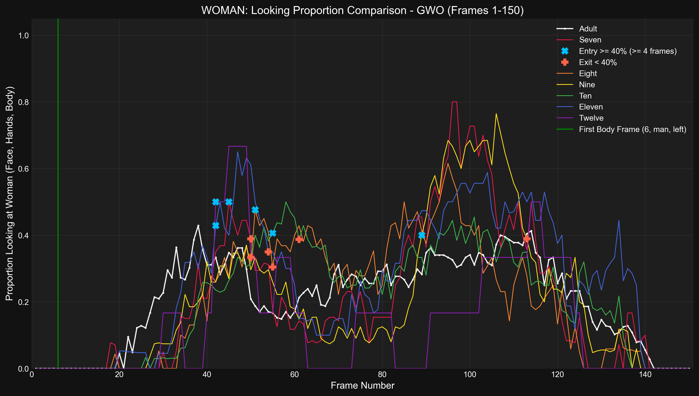
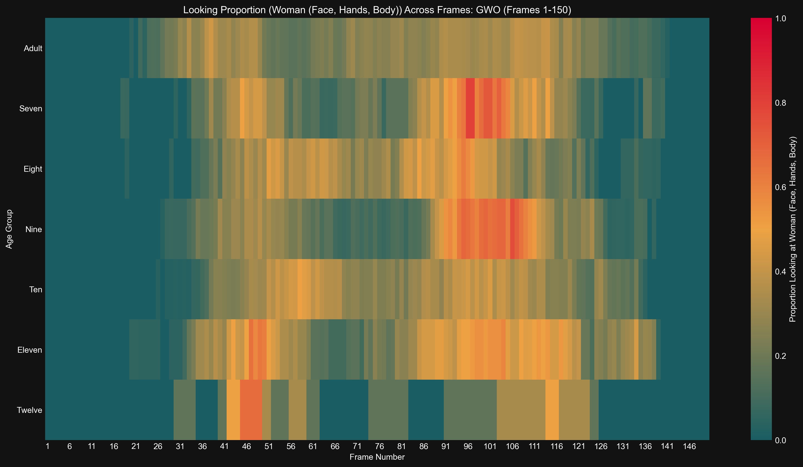

Generated: 2025-04-16 03:36:03
Time series of proportion looking at Woman (Face, Hands, Body) for Adult
Results (Adult):- Entry (≥40%): No sustained entry found.
Time series of proportion looking at Woman (Face, Hands, Body) for Seven
Results (Seven):- Entry (≥40%, ≤F75): Frame 45- Exit (<40%): Frame 50- Duration (≥40%): 5 frames- Latency (from body frame): 39 frames
Time series of proportion looking at Woman (Face, Hands, Body) for Eight
Results (Eight):- Entry (≥40%, ≤F75): Frame 51- Exit (<40%): Frame 55- Duration (≥40%): 4 frames- Latency (from body frame): 45 frames
Time series of proportion looking at Woman (Face, Hands, Body) for Nine
Results (Nine):- Entry (≥40%): Frame 89 (Occurred after F75, not included in duration/latency calculations)
Time series of proportion looking at Woman (Face, Hands, Body) for Ten
Results (Ten):- Entry (≥40%, ≤F75): Frame 55- Exit (<40%): Frame 63- Duration (≥40%): 8 frames- Latency (from body frame): 49 frames
Time series of proportion looking at Woman (Face, Hands, Body) for Eleven
Results (Eleven):- Entry (≥40%, ≤F75): Frame 42- Exit (<40%): Frame 54- Duration (≥40%): 12 frames- Latency (from body frame): 36 frames
Time series of proportion looking at Woman (Face, Hands, Body) for Twelve
Results (Twelve):- Entry (≥40%, ≤F75): Frame 42- Exit (<40%): Frame 50- Duration (≥40%): 8 frames- Latency (from body frame): 36 frames
Detailed time series comparing proportion looking at Woman (Face, Hands, Body) across age groups.
Bar plot showing latency from body frame to >=40% entry (entry <= F75) looking at Woman (Face, Hands, Body) for gwo
Results (Latency in Frames, 0 if no valid entry ≤F75): seven: 39, eight: 45, nine: 0, ten: 49, eleven: 36, twelve: 36, adult: 0
Bar plot showing duration >= 40% (entry <= F75) looking at Woman (Face, Hands, Body) for gwo
Results (Duration in Frames, 0 if no valid entry ≤F75): seven: 5, eight: 4, nine: 0, ten: 8, eleven: 12, twelve: 8, adult: 0
Bar chart comparing mean proportion looking at Woman (Face, Hands, Body) across age groups.
Results (Mean Proportion): Seven: 0.204, Eight: 0.201, Nine: 0.202, Ten: 0.205, Eleven: 0.255, Twelve: 0.137, Adult: 0.204
Heatmap showing proportion looking at Woman (Face, Hands, Body) across frames and age groups.
